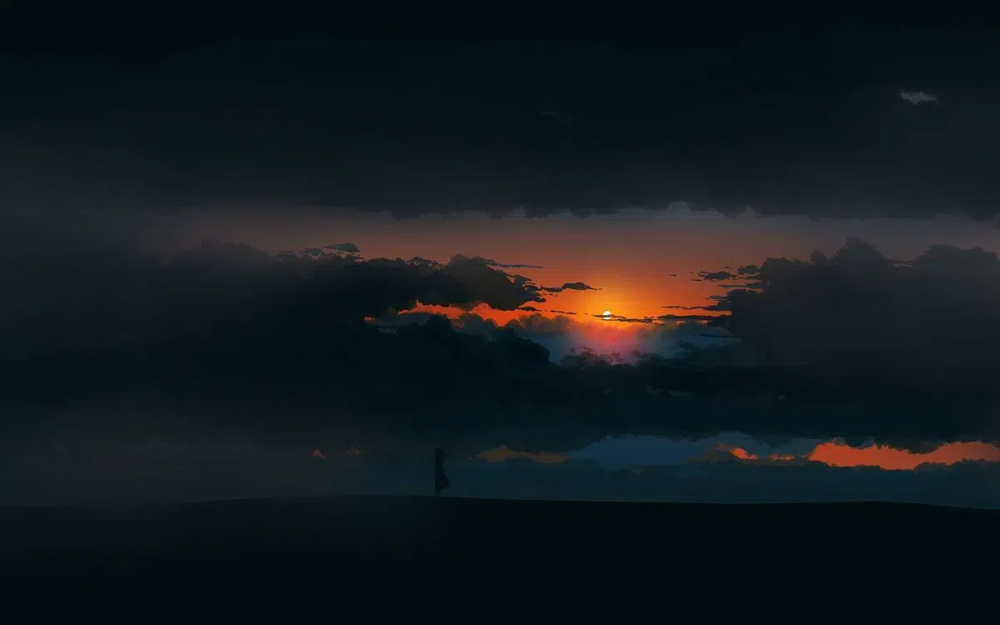

i have insomnia again! not a bad thing in the slightest, im returning to my old baseline. i dont nor ever really have operated effeciently on a 24hr cycle, more so a 22hr day or a 27hr day cycle. my mood has been great, considering ive been consolidating fragments of my past! sure i may show a hint of madness or ptsd or incoherence in my posts, but its nothing like it was in 2023! anyway... i dont know if its my amygdala's "radar" or something right around the corner... i cant place my finger on it either, ive explored everything that it could be in a defensive predictive stance! nothing comes up! sigh... i wish i knew what was coming my way, as it feels dreamy... maybe its a hard fought peace. a return to my 2020 or 2017 baselines... a career, living on my own,,, new friends,,, who knows! i wish i certainly did! as for this feeling, i've finally come as close as I can to describing it: "Sehnsucht; Solace", with a hint of Exultation? its odd. i can view it through an occult lens, a psychological lens, a metaphysical lens, a technical lens even, and they all come back with very interesting and similar things. things i care not to share here as it would leave me vulnerable! i can say ive been flipping between my amygdala being forced on/half on, to being completely relaxed. ive been feeling more calm and collected. i can process more, i can remember more... it just bugs the hell out of me that i still dont know exactly what is coming. i know this is typical in BPD 'vague dread' or 'beholding' or that subtle 'signal' that doesnt feel like fear but is of fear/anticipatory fear. but i also know its more than that? hell ive even found solace in my pain, again! it feels like home, as it did in 2017 and before! im still loving this gentle coolness of peace i feel thanks to no longer being held under that amygdala's function of 'prediction/prevention'. dammit can i just reach the climax and or end of this chapter already??? this feeling is great sure, but i know theres even more ashore!!
